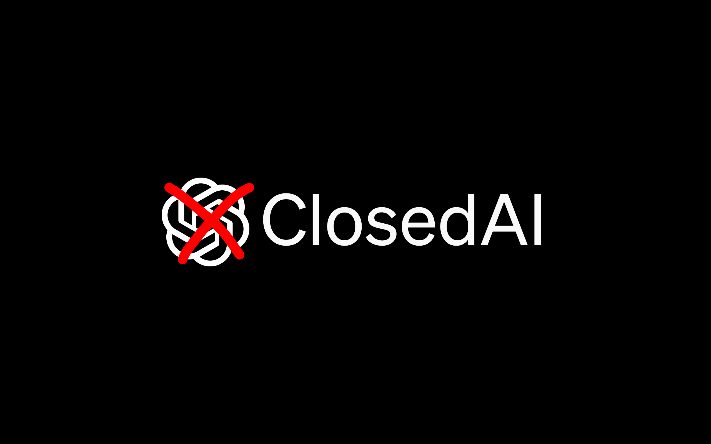

ClosedAI: OCR Sudoku Solver
Bienvenue sur la page du groupe ClosedAI. Notre équipe est composée d'éléves à EPITA Strasbourg.
Notre groupe, dirigé par Nicolas Celik, se divise en plusieurs domaines d'expertise pour mener à bien notre projet OCR Sudoku Solver à l'EPITA Strasbourg.
Nos Membres et Leurs Responsabilités:
Nicolas Celik (Chef du Groupe): Responsable du traitement d'images, et contributeur majeur au réseau de neurones.
Noah Contal: En charge du solveur de Sudoku et de développements liés au réseau de neurones.
Skander Darghouth: Responsable du site web, et du développement de l'application graphique.
Marine Collet: A contribué au traitement d'images.
Apporte un
soutien global à l'équipe et intervient en cas de besoin sur différents aspects du projet.
Notre objectif est de développer un OCR Sudoku Solver performant, combinant expertise en traitement d'images, résolution de problèmes algorithmiques et utilisation avancée de réseaux de neurones.